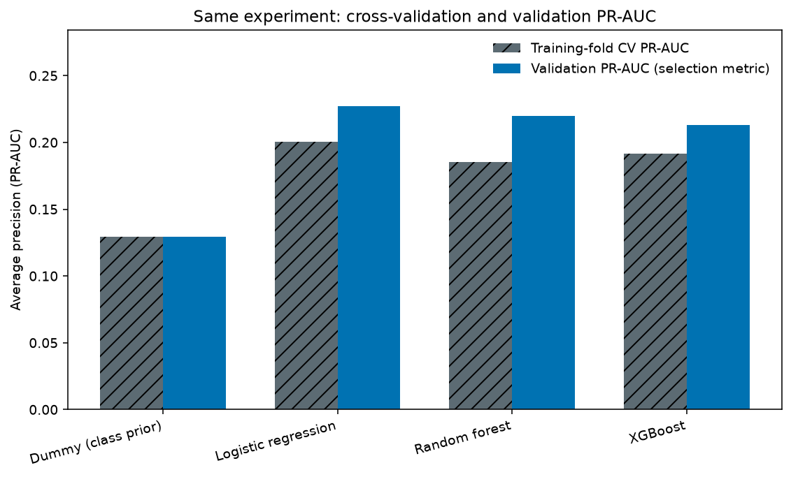
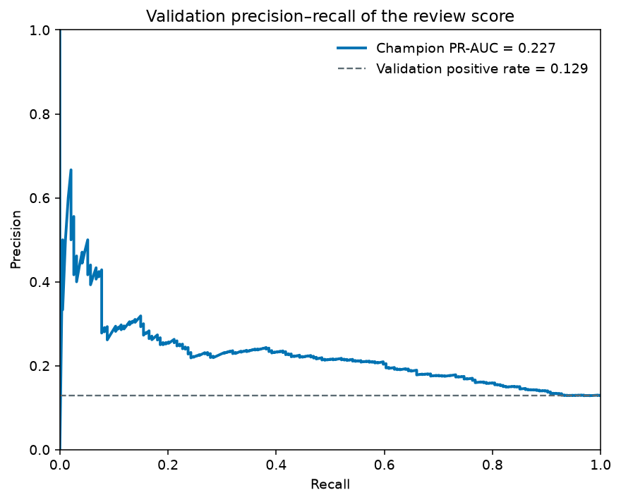
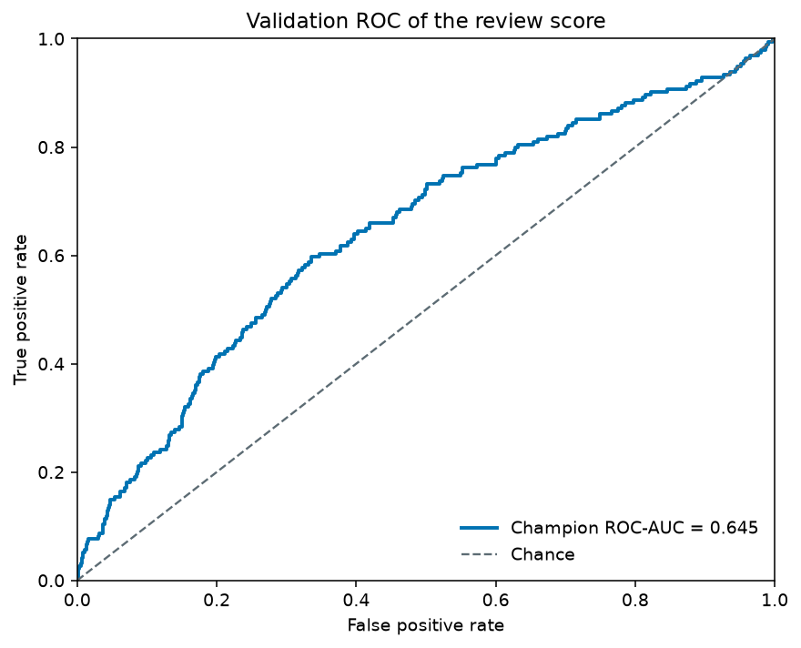
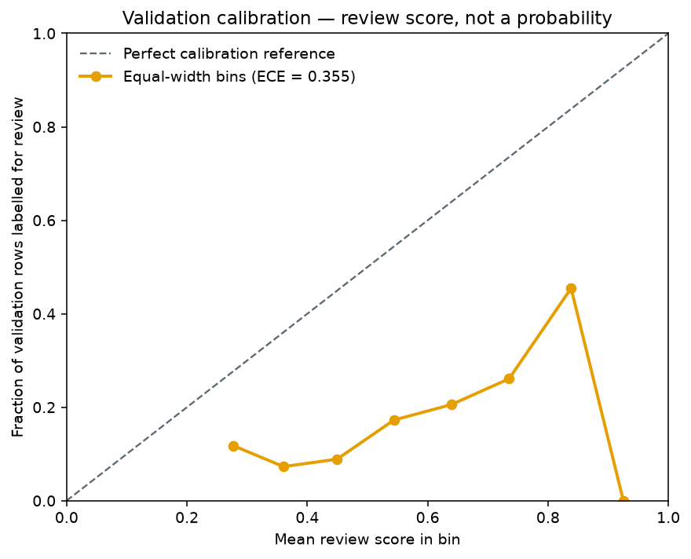
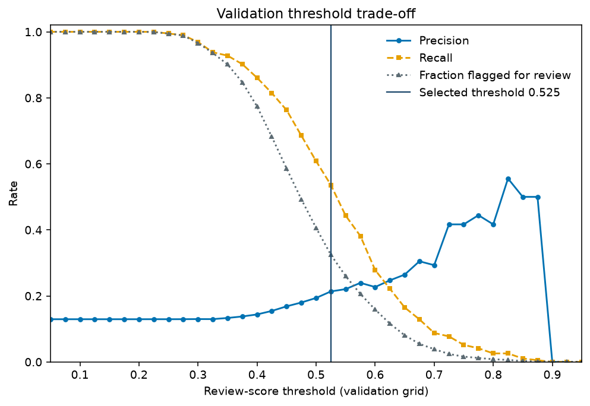
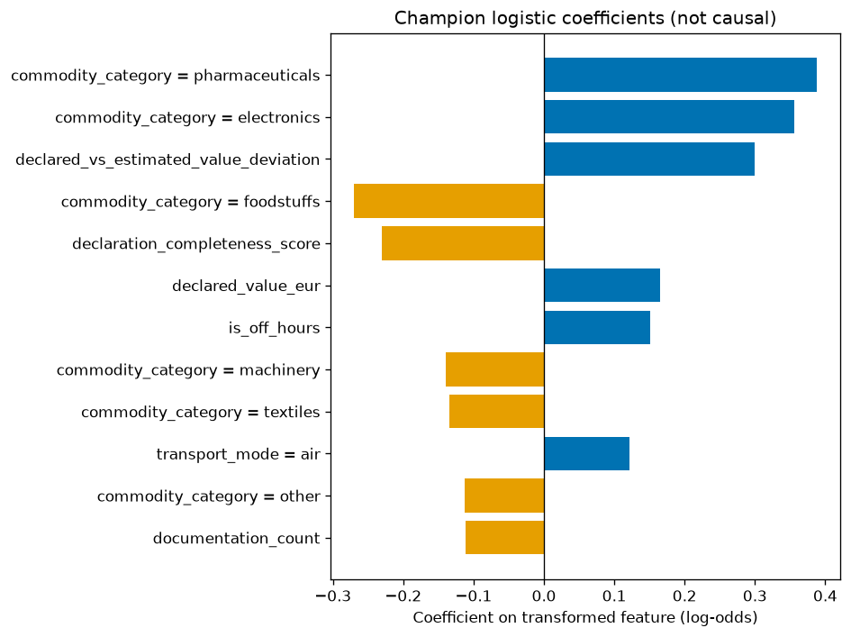

Overview
The problem is fictional. Each synthetic shipment receives a binary label, requires review, drawn from toy rules plus noise. The modelling work compares a dummy class prior, class-weighted logistic regression, a random forest and XGBoost on one stratified train and validation split. Selection uses validation average precision. The held-out test characterisation is a preserved historical summary.
This page demonstrates the evaluation protocol, the reason the selected model won, threshold trade-offs and exact linear explanations. It reads a checked evidence bundle shipped with the page. It does not score new visitor input and it does not call the repository’s Python application.
- Author: Karine Heinonen
- Repository: github.com/karinehei/Cargo-Risk-ML-Lab
- Training protocol: stratified 70% / 10% / 20%, search on the training fold only
Loading provenance.
Model comparison
The four rows below come from one saved experiment file and share a dataset fingerprint. Training-fold cross-validation PR-AUC is the search score. Validation PR-AUC is the selection score. Precision and recall use each model’s own validation threshold, so they are not one shared operating point. The frozen test set is not in this table.

| Model | CV PR-AUC | Validation PR-AUC | Validation ROC-AUC | Threshold | Precision | Recall | Eligible |
|---|
Other logistic variants in the same experiment file
These rows are calibration and class-weight comparisons. They are not the four-model ranking above. They are included because the champion policy can prefer a simpler family inside a PR-AUC indifference band.
| Variant | Validation PR-AUC | Brier | ECE | Recall | Eligible |
|---|
Evaluation
The curves are the registered champion scored on the validation split during export. They are threshold-free except for the calibration bins. The review score is not a calibrated probability, which is why the calibration plot sits away from the reference diagonal.
| PR-AUC | ROC-AUC | Brier | ECE | Positive rate | Rows |
|---|



| Score from | Score to | Rows | Mean review score | Fraction labelled for review |
|---|
Validation threshold explorer
The control selects one point on the exported validation grid: 37 thresholds from 0.05 to 0.95. Counts are aggregates. Individual validation rows are not published. The frozen test set is not used. Precision is left undefined when no row is flagged, rather than shown as zero.

Loading the validation threshold grid.
| Actual label | Not flagged | Flagged for review |
|---|---|---|
| No review label | — | — |
| Review label | — | — |
| Threshold | Precision | Recall | F-beta (β = 2) | TP | FP | TN | FN | Flagged |
|---|
Precomputed examples and explanations
Each example is a fictional shipment written for this page, scored offline with the registered champion. Choosing one displays that stored result. It does not score text you type, and it is not a live model call.

| Transformed feature | Coefficient | Direction |
|---|
| Feature | Mean PR-AUC drop | Standard deviation |
|---|
Model card and limitations
The shipments, labels and review rules are synthetic. They are an educational stand-in, not a customs process and not affiliated with any authority. The positive class is uncommon, so accuracy would look strong for a model that flags almost nobody. The protocol therefore ranks models by validation PR-AUC and chooses the threshold on validation by F-beta with β = 2, subject to a minimum precision.
The published champion is class-weighted logistic regression without probability calibration. Class weights push the review score upward. Brier score and expected calibration error on the validation split show the gap. Do not read the score as the probability that a real shipment needs review.
Historical test summary
The numbers below are the frozen test characterisation already stored with the project. This page did not re-score that split and did not draw a test curve from the summary. Details are in the methodological audit and the model card.
| PR-AUC | ROC-AUC | Precision | Recall | TP | FP | FN | TN | Rows |
|---|
| Metric | Point | 95% interval |
|---|
What remains unresolved
- Labels follow the toy generator. They are not domain-accurate review decisions.
- Positive precision is low, so most flags would be extra human reviews.
- Coefficients and permutation ranks can disagree because they group features differently.
- Explanations reconstruct the model score. They do not establish cause or operational risk.
- Nothing here authorises an automated adverse decision.
Further reading: training protocol, explainability, limitations.